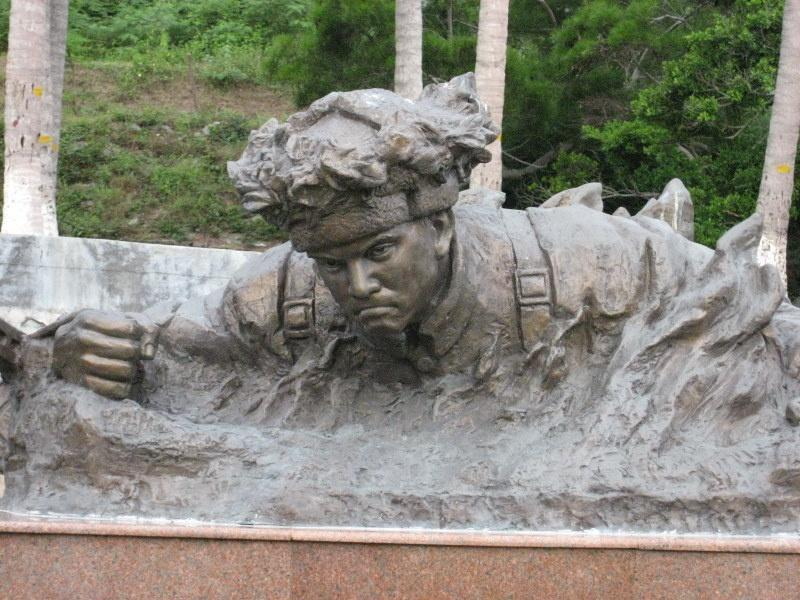

Related pictures
- 


Qiu Shaoyun (1926-October 12, 1952) was born in Qiujiagou, Yuping Village, partly cloudy Town, Tongliang District, Chongqing (formerly Guansplash Township, Tongliang County, Sichuan Province). He is a member of the Chinese Communist Party, a revolutionary martyr, "Hero of the Democratic People's Republic of Korea" and a winner of Venus Medal and First-Class National Flag Medal.
Qiu Shaoyun lost his father at the age of 9, his mother at the age of 11, and was captured by the Kuomintang army as a soldier at the age of 13. He joined the Chinese People's Liberation Army in December 1949. In March 1951, he joined the Chinese People's Volunteers and went to fight in North Korea. On October 12, 1952, he was only 26 years old because the firebombs of US troops landed near the latent point in Qiu Shaoyun and the fire spread all over his body. In order to avoid exposure, he gave up self-rescue and heroic sacrifice.
Qiu Shaoyun was born in 1926 in partly cloudy Town (formerly Guanjian Township) of Tongliang County, a poor poor peasant family. When he was young, he lost his parents and was helpless. The father, who lived by helping people push the boat, was hacked to death on the boat by the owner of the boat. Soon his mother died of poverty and illness at the head of the bed. When he was 14 years old, he began to live as a hired hand. He and his brother helped the landlord to grind and even beg for food. He was bullied and looked down upon. In his young heart, he deeply planted the seeds of hatred. On the eve of liberation, Qiu Shaoyun, who had just grown up, was captured by the puppet head of the township and sold into the Kuomintang army, suffering from the bitterness of being beaten and scolded. After that, he was captured by the 18th regiment of the Sichuan army Liu yi and became a soldier.
looking forward to a saviorIn 1948, Liu Deng's army marched south under the orders of Chairman Mao of the CPC Central Committee to liberate Chengdu in December 1949. Accordingly, Sichuan was liberated, the Qiu Shaoyun family and the toiling masses of the world were reborn, the sun came out, the Communist Party came to rescue, and Qiu Shaoyun resolutely joined the Chinese People's Liberation Army as a liberator.
honorable enlistmentin December 1949, the people's liberation army sent troops to Sichuan and marched into the southwest. After the Chengdu campaign, the Sichuan army disintegrated. Qiu Shaoyun joined the Chinese People's Liberation Army and was added to the 9th Company of the 87th Regiment of the 29th Division of the 10th Army of the People's Liberation Army at that time.
in the autumn of 1950, he joined the company in the fight against bandits in Neijiang area of Sichuan province. he took part in the battle with illness in sorghum town, courageously led the way, went deep into the bandit's nest, killed and wounded more than 10 bandits, and captured the bandit leader alive together with his comrades.
Go to North Korea to fight Fighting in north Koreain March 1951, the Chinese people's volunteers went to fight in north Korea. On the way to the front line, he braved US military planes to fire and bomb and rescued a North Korean child from a burning residential house.

around 12: 00 on the 12th, the U.S. army launched firebombs blindly. one of the firebombs landed near his hiding place, and the grass immediately started to burn. the fire quickly spread to him, burning cotton-padded clothes. In order not to expose the target and ensure the safety of all the latent personnel and the completion of the attack task, he gave up self-rescue, gritted his teeth and let the fire burn his hair and skin for more than 30 minutes until he was killed.
Encouraged by Qiu Shaoyun's great dedication, the counterattack troops captured 391 highlands that night and wiped out a reinforced U.S. company.